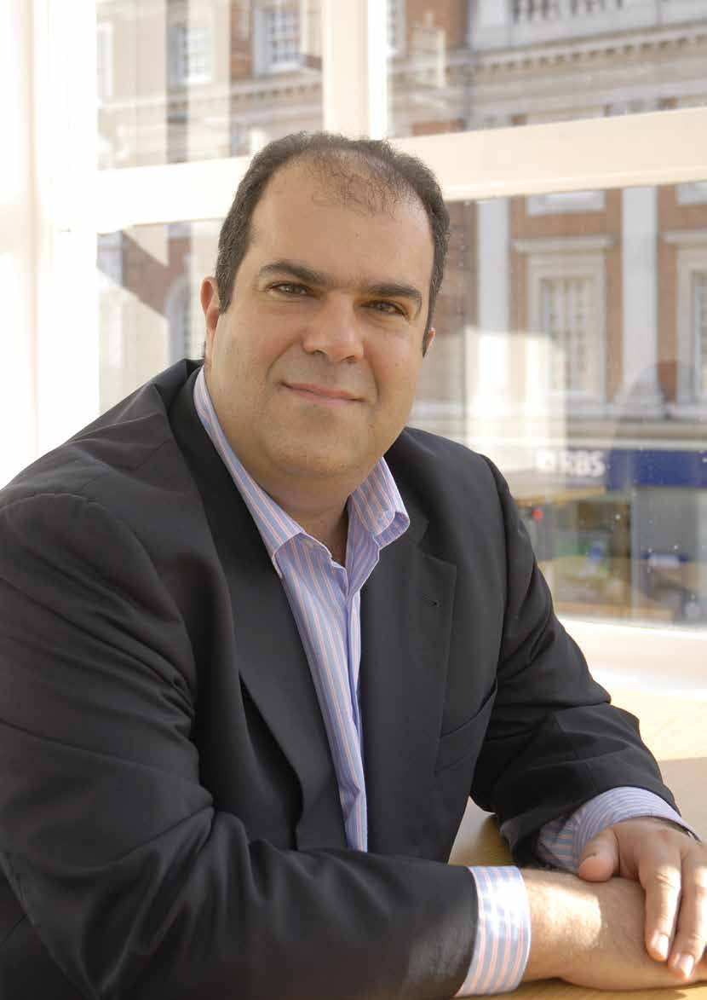

Sir Stelios
Mr. EasyJet!

❶ Think about it
Which airlines are there in your country? Have you ever flown on them? What was it like? Are there any low-cost airlines? Where do they fly to? What are some of your favourite airlines? Are there any entrepreneurs from your country who have set up airlines? Who are they? How successful have they been?
❷ Reading
Sir Stelios Haji-Ioannou is a British entrepreneur of Greek-Cypriot origin. He’s famous for starting the low-cost airline easyJet – the largest UK-based airline and Europe’s second biggest (after Ryanair). Here are some of his top tips for succeeding in the world of business.
Look out for new ideas!
Stelios has launched several ventures under the holding company easyGroup and is constantly on the lookout for new ideas. “I travel and try to keep my ears and eyes open in order to identify new opportunities. Then I study the business plan, working on different scenarios to see what costs and revenues are possible,” he explained in an interview.
Take risks!
“Each time I launch a business, I’m risking my own money and the risk is that I will lose that money. There’s no reward without risk,” Stelios once said in an interview. However, he warns against taking unnecessary risks. “Crunch some numbers and look at various scenarios – worst case as well as best case. Also, you may need an exit strategy, in case it all goes wrong. Get advice, speak to friends and associates, hope for luck, but at the end of the day only you can make your own decisions,” he added.
Have clear brand values!
Since the establishment of easyJet in 1995, Stelios has set up 16 other companies as part of easyGroup. These include easyBus, easyCruise, easyOffice, easyCar, easyPizza, easyHotel and easyInternetcafe. However, although they offer different services, they all have the same distinctive orange logo, as well as offering a no-frills service and using the yield management system to set prices. On top of that, they follow the easyGroup’s brand guidelines, which include: offer great value, keep it simple, innovate relentlessly, make a difference in people’s lives, and offer an honest, open and caring service.
Listen!
Stelios thinks that it’s important to have people to look up to as role models or mentors. “I have business heroes and people I admire. Richard Branson was one of my early business heroes and he was one of the reasons I got into the airline business. At the beginning of the 90s, I was talking to him about becoming a franchisee of Virgin Atlantic but in the end I decided to go it alone,” he explained.
Enjoy it!
Finally, Stelios believes that it’s important to have fun while you’re running your business. “Many of the easyGroup businesses are a result of my turning a hobby or just something I was passionate about into a business. Look at easyCruise. As a Greek person born into a shipping family I wanted to apply the Easy brand to offering people great holidays at sea, like the ones I enjoyed, and still enjoy, as a kid at the Greek Islands or the South of France. It’s essential that you enjoy what you’re doing in order to motivate yourself,” he explains. Of course, running a business involves a lot more than just that. “Hard work really is one of the best tools to success. You remember Gary Player, the golfer, who said, ‘The harder I practise, the luckier I get’?” he added.
Fly high, Stelios! ✪

Watch Stelios talking about business. Search youTube for “easyJet’s Stelios: ‘i Took Some Outrageous Risks’”.